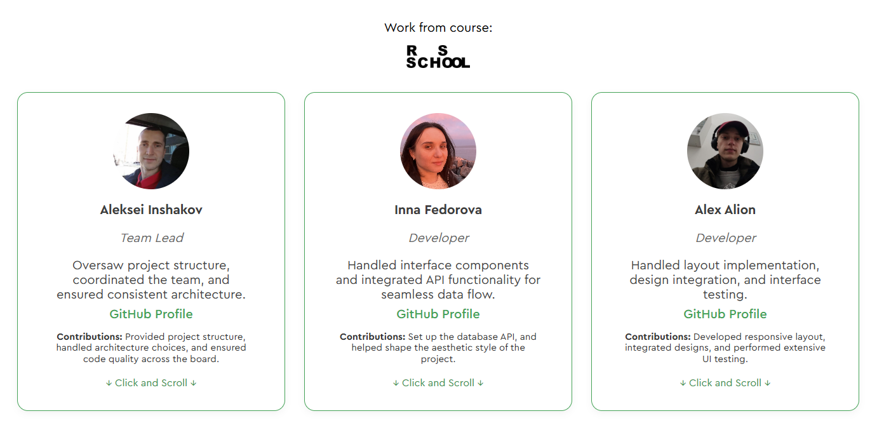
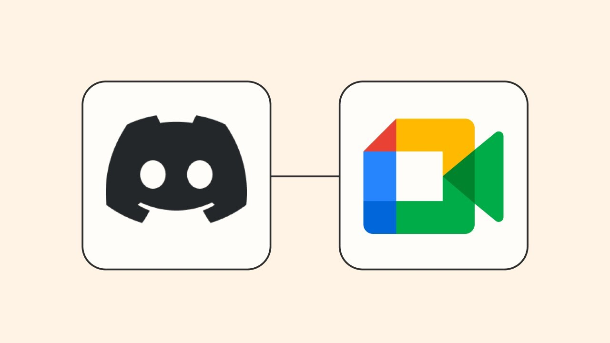
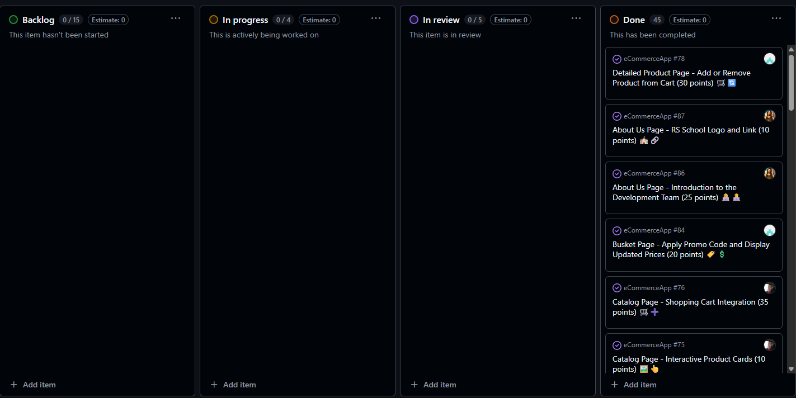
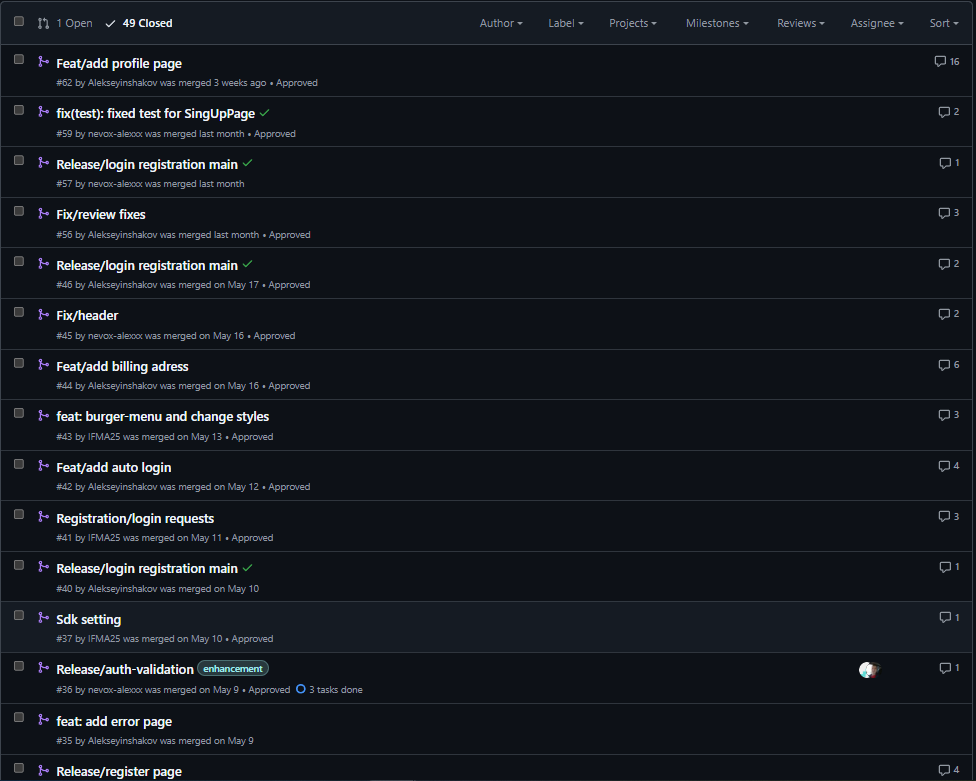
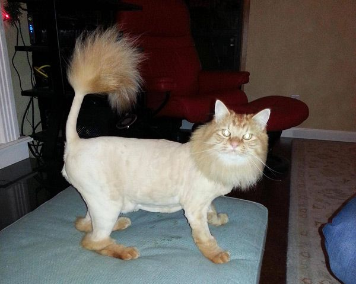

Наша команда
- Алексей — тимлид
- Инна — интеграция с API
- Саша — тестирование и настройка окружения

Коммуникация
- Telegram — основной канал для повседневного общения
- Discord — митинги 2–3 раза в неделю
- Google Meet — запасной вариант при сбоях Discord

Планирование и задачи
- Гибкое распределение задач по времени и желаниям
- GitHub Issues + таблица задач
- Взаимопомощь без конфликтов

Технологии и ревью
- Стек: React, TypeScript, Zustand, Vite
- Активное использование pull request'ов
- Code review делали по очереди, с участием ментора при необходимости

Проблема и решения
- Проблема с настройкой SDK в commercetools
- Проблема слияния корзины анонимного и авторизованного пользователя
- Заставить себя работать :D
Фичи и достижения
- Фокус на полное соответствие ТЗ
- Дополнительные фичи — в планах после курса
- Гордость за слаженную работу команды

Спасибо!
Ждём ваших вопросов :)